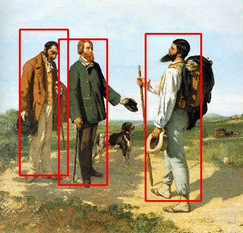

工具参考书之OpenCv基本使用
复习一遍学过的OpenCv相关模块内容，具体参考官方文档；安装和开发环境配置可参考这。
Include和Lib
使用OpenCv前必须设置好头文件和库文件路径，不同的环境有不同的语法，但本质不会变。如果使用C++开发，一般来说，包含opencv2中的头文件更方便，opencv2基于C++进行接口封装，分模块管理，使用更方便。而库文件同样分模块，幸运的是，OpenCv3.0后只需要添加opencv_world这一个库文件路径。
这里附上qmake主要设置：
INCLUDEPATH += C:/MyApps/opencv310/build/include/
LIBS += \
-L$$"C:/MyApps/opencv310/build/x64/vc14/lib" \
-lopencv_world310d
对于头文件，分不清模块间区别，就直接包含opencv2/opencv.hpp吧。
基本数据类型
常用数据类型
cv::Mat：N维数组类，也是一个通用的矩阵类和图像类；type：表示数组类每个元素的类型，或表示图像每个像素的类型，通过宏定义CV_MAKE_TYPE实现；cv::Point：点坐标，包含x,y两个元素；cv::Size：尺寸，包含width,height两个元素；
（Point和Size均只有两个成员变量，貌似相同，但是两个类中封装的函数不一样，Point可以进行点乘等运算，而Size可以计算面积等）cv::Rect：长方形结构体，包括长方形的左上角坐标和大小；cv::Range：范围或区间，用于表示子序列(subsequence)或切片(slice)；cv::Scalar：4元素向量；cv::String：字符串；cv::_InputArray,cv::_OutputArray：输入输出类，其拷贝构造函数可以接受Mat,Vec等各种数据类型；cv::Mat_<T>：N维数组类，在编译时确定元素类型；cv::Matx<T,m,n>：用于小尺寸矩阵，在编译时确定元素类型和矩阵尺寸；cv::MatIterator_<T>：Mat迭代器；cv::Complex<T>：复数类，和std::complex类似；cv::UMat：类似于Mat（会在支持OpenCL的设备上自动使用GPU运算，在不支持OpenCL的设备仍然使用CPU运算）cv::cuda::GpuMat：用使Gpu的Mat类型，需要安装Cuda；
模板类之间的联系：
// type
CV_MAKE_TYPE(depth,cn) ~ CV_MAKE_TYPE(CV_8U,cn) -> CV_8UC(n)
CV_MAKE_TYPE(depth,cn) ~ CV_MAKE_TYPE(CV_8U,1) -> CV_8UC1
// 坐标和点
cv::Point_<T> ~ cv::Point_<int> -> cv::Point2i -> cv::Point
cv::Point3_<T> ~ cv::Point3_<int> -> cv::Point3i
cv::Size_<T> ~ cv::Size_<int> -> cv::Size2i -> cv::Size
cv::Rect_<T> ~ cv::Size_<int> -> cv::Rect2i -> cv::Rect
// 矩阵和向量
cv::Matx<T,m,n> ~ cv::Matx<T,m,1> ~ cv::Vec<T, m>
cv::Vec<T, 4> ~ cv::Scalar_<T> ~ cv::Scalar_<double> -> cv::Scalar
cv::Vec<T, n> ~ cv::Vec<int, 2> -> cv::Vec2i
cv::Vec<T, n> ~ cv::Vec<uchar, 3> -> cv::Vec3b
更多的数据类型可参考这。
type与通道类型对应关系：
| C1 | C2 | C3 | C4 | |
|---|---|---|---|---|
| CV_8U | 0 | 8 | 16 | 24 |
| CV_8S | 1 | 9 | 17 | 25 |
| CV_16U | 2 | 10 | 18 | 26 |
| CV_16S | 3 | 11 | 19 | 27 |
| CV_32S | 4 | 12 | 20 | 28 |
| CV_32F | 5 | 13 | 21 | 29 |
| CV_64F | 6 | 14 | 22 | 30 |
type与数据类型对应关系：
| C1 | C2 | C3 | C4 | |
|---|---|---|---|---|
| CV_8U | uchar |
Vec2b |
Vec3b |
Vec4b |
| CV_8S | char |
Vec<char, 2> |
Vec<char, 3> |
Vec<char, 4> |
| CV_16U | short |
Vec2w |
Vec3w |
Vec4w |
| CV_16S | ushort |
Vec2s |
Vec3s |
Vec4s |
| CV_32S | int |
Vec2i |
Vec3i |
Vec4i |
| CV_32F | float |
Vec2f |
Vec3f |
Vec4f |
| CV_64F | double |
Vec2d |
Vec3d |
Vec4d |
创建cv::Mat
- 创建二维图像
cv::Mat mat(200, 300, CV_8UC3);
std::cout << "dims: " << mat.dims; // 2维
std::cout << "row:" << mat.rows; // 200行
std::cout << "col:" << mat.cols; // 300列
std::cout << "total:" << mat.total(); // 总共60000个元素
std::cout << "depth:" << mat.depth(); // 深度，即类型CV_8U
std::cout << "channel:" << mat.channels(); // 3通道，即类型C3
std::cout << "eSize:" << mat.elemSize(); // 一个元素为3个字节，即3个uchar
std::cout << "eSize1:" << mat.elemSize1(); // 元素的一个通道为1个字节，即uchar
std::cout << "type:" << mat.type(); // type == CV_8UC3
- 创建多维数组
int size[] = {20, 30, 20, 50}; // 每维的元素个数
cv::Mat mat(sizeof(size) / sizeof(int), size, CV_16UC(5));
std::cout << "dims: " << mat.dims; // 4维
std::cout << "row:" << mat.rows; // 多维时为-1
std::cout << "col:" << mat.cols; // 多维时为-1
std::cout << "total:" << mat.total(); // 总共600000个元素
std::cout << "total:" << mat.total(0, 2); // 维度在[0,2)总共600个元素
std::cout << "depth:" << mat.depth(); // 深度，即类型CV_16U
std::cout << "channel:" << mat.channels(); // 5通道，即类型C(5)
std::cout << "eSize:" << mat.elemSize(); // 一个元素为10个字节，即5个ushort
std::cout << "eSize1:" << mat.elemSize1(); // 元素的一个通道为2个字节，即ushort
std::cout << "type:" << mat.type(); // type == CV_16UC(5)
- 从已有数据创建Mat
mat.create(300, 300, CV_8UC3);
uchar data[300*300*3];
cv::Range range[] = {cv::Range(0, 100), cv::Range(0, 200)};
// 只创建矩阵头，使用data作为元素内存
cv::Mat mat0(300, 300, CV_8UC3, data);
// 只创建矩阵头，和mat共用指定的元素内存，
cv::Mat mat1(mat, cv::Range(0, 100), cv::Range(0, 200));
cv::Mat mat2(mat, cv::Range::all(), cv::Range(0, 200));
cv::Mat mat3(mat, cv::Rect(0,0, 100, 200));
cv::Mat mat4(mat, range);
cv::Mat mat5 = mat; // 效果同 cv::Mat mat4(mat);
cv::Mat mat6 = mat.reshape(4, 100); // 改成4通道，100行
cv::Mat mat7 = mat.row(100); // 取一行
cv::Mat mat8 = mat.colRange(0, 100);// 取100列
// 通过复制创建，包括元素内存数据也复制，即不共用元素内存
cv::Mat mat9 = mat.clone();
cv::Mat mat10;
mat.copyTo(mat10);
// 通过矩阵表达式('='右边为cv::MatExpr)计算，创建新的矩阵
cv::Mat mat11 = mat0 + mat5;
- 创建特殊矩阵
uchar vec[300] = {255};
cv::Mat mat0 = cv::Mat::diag(cv::Mat(cv::Vec<uchar, 300>(vec))); // 对角矩阵，需要给出对角线向量
cv::Mat mat1 = cv::Mat::eye(300, 300, CV_8UC1) * 255; // 单位矩阵
cv::Mat mat2 = cv::Mat::ones(300, 300, CV_8UC1) * 128; // 初值全为1的矩阵
cv::Mat mat3 = cv::Mat::zeros(300, 300, CV_8UC1) + mat1; // 初值全为0的矩阵
cv::Matx<uchar, 4, 4> matl(0, 1, 2, 3,
3, 2, 1, 0,
4, 4, 4, 4,
8, 8, 8, 8); // 创建小矩阵，编译时就确定的尺寸
cv::Matx<uchar, 3, 3> mat33;
mat33 << 1, -1, 0,
-1, 0, 1,
0, 1, 1;
cv::Mat运算
具体的接口参考cv::Mat, cv::Mat_<>, cv::Matx<>, cv::MatExpr
访问元素
- 使用at或指针访问单个元素
for (int k = 0; k < mat.rows; k++)
{
uchar* byte = mat.ptr<uchar>(k);
cv::Vec3b* ptr = mat.ptr<cv::Vec3b>(k);
for (int i = 0; i < mat.cols; i++)
{
mat.at<cv::Vec3b>(k, i) = cv::Vec3b(k%255, 0, i%255);
byte[3*i+0] = k%255; byte[3*i+1] = 0; byte[3*i+2] = i%255;
ptr[i] = cv::Vec3b(k%255, 0, i%255);
}
}
- 使用iterator访问单个元素
for (cv::MatIterator_<cv::Vec3b> it = mat.begin<cv::Vec3b>();
it!=mat.end<cv::Vec3b>();
++it)
*it = cv::Vec3b(0, 255, 255);
// 结合Mat_<>和auto，iterator更方便使用
for (auto& it:cv::Mat_<cv::Vec3b>(mat))
it = cv::Vec3b(0, 255, 255);
- 使用forEach访问单个元素
// 使用forEach，可以使用仿函数或lambda
// 其中，pix为元素值，pos为元素坐标
mat.forEach<cv::Vec3b>(
[](cv::Vec3b& pix, const int* pos)->void{pix = cv::Vec3b(255, 255, 0);}
);
- 按向量访问
mat.row(150) = mat.row(0); // 不起作用，'='右边为cv::Mat，只是共用元素内存
// 上面1行与下面3行等价，整个过程没有产生复制元素内存的操作
cv::Mat a = mat.row(0); // a和mat共用第0行元素内存
cv::Mat b = mat.row(150); // b和mat共用第150行元素内存
a = b; // a和b共用元素内存
mat.row(150) = mat.row(0) + 0; // '='右边为cv::MatExpr，会复制元素内存
mat.row(0).copyTo(mat.row(150));// 通过copyTo，会复制元素内存数据
mat.diag(-10).copyTo(mat.diag(10)); // 将对角线下第10行复制到对角线上第10行
矩阵基本计算
cv::Vec3f a(1.0, 0.0, 0.0);
cv::Vec3f b(0.0, 1.0, 0.0);
std::cout << a.cross(b); // 向量叉乘，向量积
std::cout << a.dot(b); // 向量点乘
cv::Mat a(cv::Matx22f(-2, 1, 4, -3));
cv::Mat b(cv::Matx22f(1, 2, 3, 4));
std::cout << a.t(); // 转置矩阵
std::cout << a.inv(); // 逆矩阵
std::cout << a.diag(); // 对角线向量
std::cout << a.mul(b); // 按元素相乘
std::cout << a/b; // 按元素相除
std::cout << a+b; // 矩阵加法
std::cout << a*b; // 矩阵乘法
std::cout << 2*a;
std::cout << (a<b); // 矩阵比较，结果为Mask矩阵
std::cout << (2.5<b);
std::cout << cv::max(a, b); // 取最值，结果矩阵
std::cout << cv::min(a, 0);
std::cout << cv::abs(a);
cv::Mat c(cv::Matx<int, 2, 2>(1, 1, 4, 3));
cv::Mat d(cv::Matx<int, 2, 2>(1, 2, 3, 4));
std::cout << (c&d); // 按元素做位与
std::cout << (c|d); // 按元素做位或
std::cout << (c^d); // 按元素做位或
C接口
前面均是基本C++介绍的，但是OpenCv同样提供的C接口，具体可以看文档。C++接口用cv名字空间封装，而C接口以cv或CV开头，没有特殊情况，最好不要C和C++接口混用，虽然两者间可以转换。
知道基本OpenCv数据结构的使用，那之后无论用Mat来处理图像，或是基于矩阵进行数值计算，基本上就是看库模块技术文档+实践的过程了。
##
图像基本操作
基本的图像操作模块有imgcodecs,videoio,highgui,imgproc，下面是一些简单用法。
图片读写
最简单就是使用imread和imwrite。
cv::Mat img = cv::imread("pic.jpg"); // 读取图像数据到Mat
cv::imwrite("pic_new.jpg", img); // 将Mat保存成图像
图片显示
显示图片就要创建窗口，OpenCv通过字符串来索引窗口。如果要使用Qt做为图形显示后端，就需要自行编译，加入Qt编译参数。
cv::String wstr = "Pic";
cv::Mat img = cv::imread("pic.jpg");
cv::namedWindow(wstr, cv::WindowFlags::WINDOW_AUTOSIZE); // 创建窗口
cv::moveWindow(wstr, 50, 50); // 移动窗口
cv::setWindowTitle(wstr, "Showing pic.jpg"); // 设置标题
cv::Rect rect = cv::selectROI(img); // 输入Rect
cv::imshow(wstr, img); // 显示窗口
while(1) {
cv::imshow(wstr, img);
char key = cv::waitKey(10); // 等待按键，同时便于观看窗口
if (key == 'q' || key == 27) break;
}
cv::destroyWindow(wstr); // 释放窗口
//cv::destroyAllWindows(); // 释放所有窗口
窗口中还可以添加鼠标事件，Trackbar等，通过回调来实现。
视频读写
通过cv:VideoCapture或cv:VideoWriter来读写视频文件、摄像头图像等，其视频后端支持FFMpeg,OpenNI等。
//cv::VideoCapture cap("cam.mp4"); // 打开文件
cv::VideoCapture cap(0); // 打开摄像头
//cap.open(0); // 使用open函数打开
cv::Size size(cap.get(cv::CAP_PROP_FRAME_WIDTH), // 获取cap参数
cap.get(cv::CAP_PROP_FRAME_HEIGHT)); // 同时通过set可以设置相映参数
int codec = cv::VideoWriter::fourcc('M','J','P','G');
cv::VideoWriter wrt("./cam.mp4", codec, 25, size, 1);
while(1) {
cap >> img; // cap.read(img); // 读取图像
wrt << img; // wrt.write(img); // 将图像写入到文件
cv::imshow(wstr, img);
char key = cv::waitKey(10);
if (key == 'q' || key == 27) break;
}
cap.release();
wrt.release();
图像绘制
OpenCv提供了基本的绘图函数，到此查看技术文档。
cv::Mat img(300, 300, CV_8UC3);
cv::Scalar clr_b = cv::Scalar(255,0,0);
cv::Scalar clr_g = cv::Scalar(0,255,0);
cv::Scalar clr_r = cv::Scalar(0,0,255);
cv::arrowedLine(img, cv::Point(0,0), cv::Point(100,100), clr_b);
cv::line(img, cv::Point(0,150), cv::Point(300,150), clr_g);
cv::circle(img, cv::Point(150,150), 100, clr_r);
cv::putText(img, "Hello", cv::Point(100,100),
cv::HersheyFonts::FONT_HERSHEY_SIMPLEX, 1.0, clr_b);
cv::imshow(wstr, img);
Python中使用OpenCv
先安装opencv-python，即可在python中引入。
import cv2
img = cv2.imread('pic.jpg')
cv2.imshow('pic', img)
while True:
key = cv2.waitKey(10)
if key in [27, 113]:
break
cv2.destroyAllWindows()
还可以和Matplotlib、Numpy等库结合使用。
import matplotlib.pyplot as plt
import cv2
plt.imshow(cv2.cvtColor(cv2.imread('pic.jpg'), cv2.COLOR_BGR2RGB))
plt.show()
几个小demo
顺便附上几个以前用过模块的小demo。
图像畸变校正
原来用Matlab，用OpenCv也试下。
std::vector<cv::String> filelist;// 图像文件
// find corners
int square_size = 30; // 方格大小，mm
cv::Size image_size(640, 480); // 图像大小，pixel
cv::Size border_size(13,12); // 内角点个数
std::vector<std::vector<cv::Point2f>> image_corners;// 角点坐标
for (auto& file:filelist)
{
cv::Mat img;
cv::Mat gray;
std::vector<cv::Point2f> corners;
img = cv::imread(file);
cv::cvtColor(img, gray, cv::COLOR_BGR2GRAY);
bool found = cv::findChessboardCorners(img, border_size, corners,
cv::CALIB_CB_ADAPTIVE_THRESH | cv::CALIB_CB_FAST_CHECK | cv::CALIB_CB_NORMALIZE_IMAGE);
if (found)
{
cv::cornerSubPix(gray, corners, cv::Size(11,11), cv::Size(-1,-1),
cv::TermCriteria(cv::TermCriteria::EPS + cv::TermCriteria::COUNT, 30, 0.1));
cv::drawChessboardCorners(img, border_size, cv::Mat(corners), found);
image_corners.push_back(corners);
cv::imshow(file, img);
}
}
// calc matrix
cv::Mat cam_mat = cv::Mat::eye(3, 3, CV_64FC1);
cv::Mat dist_coeffs = cv::Mat::zeros(8, 1, CV_64FC1);
std::vector<cv::Mat> rvecs, tvecs;
std::vector<std::vector<cv::Point3f>> obj_points(1);
for (int i = 0; i < border_size.height; i ++)
for (int j = 0; j < border_size.width; j ++)
obj_points[0].push_back(cv::Point3f(float(j*square_size),
float(i*square_size),
0));
obj_points.resize(image_corners.size(), obj_points[0]);
cv::calibrateCamera(obj_points, image_corners, image_size,
cam_mat, dist_coeffs, rvecs, tvecs,
cv::CALIB_FIX_K4 | cv::CALIB_FIX_K5);
// undistort
cv::Mat view, rview, map1, map2;
cv::initUndistortRectifyMap(cam_mat, dist_coeffs, cv::Mat(),
cv::getOptimalNewCameraMatrix(cam_mat, dist_coeffs, image_size, 1, image_size, 0),
image_size, CV_16SC2, map1, map2);
for (auto& file:filelist)
{
view = cv::imread(file);
//cv::undistort(view, rview, cam_mat, dist_coeffs, cam_mat);
cv::remap(view, rview, map1, map2, cv::INTER_LINEAR);
cv::imshow(file + " + undistort", rview);
}
DPM人物检测
DPM模块在opencv_contrib中，需要自行编译，或者直接使用源码。
typedef cv::dpm::DPMDetector DD;
cv::Mat img = cv::imread("pic.jpg");
cv::Mat frame = img.clone();
cv::Ptr<DD> detector = // 检测器
DD::create(std::vector<std::string>(1, "inriaperson.xml"));
std::vector<DD::ObjectDetection> ds;
detector->detect(frame, ds); // 开始检测
for (auto& it:ds)
cv::rectangle(img, it.rect, cv::Scalar(0,0,255), 2);
cv::imshow("mat", img);
检测示例结果：

Tracker物体跟踪
tracking模块在opencv_contrib中，需要自行编译，或者直接使用源码。
cv::Mat img;
cv::Ptr<cv::Tracker> tracker = cv::Tracker::create("KCF");
cv::VideoCapture cap(0);
cap >> img;
cv::Rect2d roi = cv::selectROI("tracker", img, false, false); // 框选跟踪目标
tracker->init(img, roi);
while (cap.isOpened())
{
cap >> img;
tracker->update(img, roi); // 跟踪
cv::rectangle(img, roi, cv::Scalar(0,0,255),2);
cv::imshow("tracker", img);
}
常用模块
- Operations on arrays：线性代数计算等；
- Image processing：各种图像滤镜、特征检测、坐标变换等；
- calib3d：图像校准和3D重建；
转载请注明来源，欢迎对文章中的引用来源进行考证，欢迎指出任何有错误或不够清晰的表达。可以在下面评论区评论，也可以邮件至 [ yehuohan@gmail.com ]
文章标题:工具参考书之OpenCv基本使用
本文作者:z000tech
发布时间:2018-05-29, 17:31:15
最后更新:2019-05-21, 20:48:48
原始链接:http://yehuohan.github.io/2018/05/29/笔记/DOC/工具参考书之OpenCv基本使用/版权声明: "署名-非商用-相同方式共享 4.0" 转载请保留原文链接及作者。